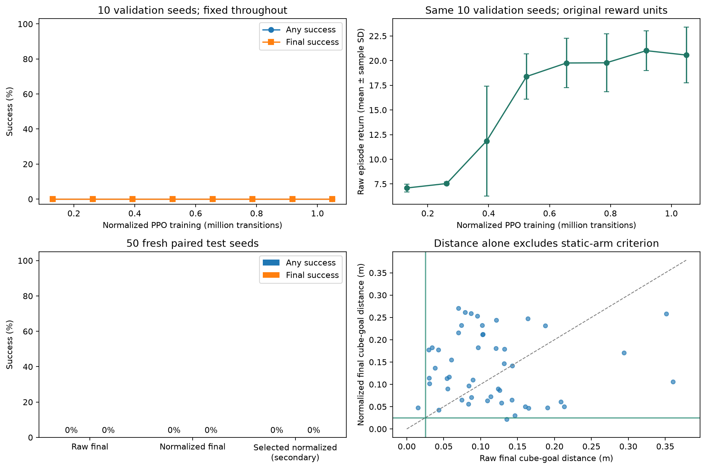

Stage 1 · controlled PPO assignment · Panda PickCube-v1
Does scaling the observations improve grasp, place and hold?
Observation normalization changed final success by +0 percentage points on this paired test set. This is one seed per treatment: it identifies a useful next experiment, not a multi-seed algorithm ranking.
Only treatment: online SB3 VecNormalize observations, clip ±10; rewards stay unnormalized. No warmup. Both models train from scratch for 1,048,576 transitions with seed 42, four CPU workers and the same PPO architecture, hyperparameters and upstream task.
Primary comparison: fixed-budget final checkpoints. Fresh test seeds 90000–90049; 50 control steps per episode. Official success requires cube-to-goal 3D distance ≤0.025 m and all seven arm-joint speeds ≤0.2 rad/s. Episodes continue through the full horizon after first success.
| Checkpoint | Any success | Final success | Raw return: mean ± sample SD |
|---|
| Raw final | 0/50 | 0/50 | 19.73 ± 4.00 |
| Normalized final | 0/50 | 0/50 | 20.43 ± 2.51 |
| Selected normalized (secondary) | 0/50 | 0/50 | 20.46 ± 2.47 |

Native simulator rollouts
The first three predeclared test seeds, with identical reset conditions for both policies. These are actual simulator frames; no success-based video selection. Use the video controls to compare the full episodes.
Seed 90000
Raw final: final success False; distance 0.015 mNormalized final: final success False; distance 0.048 mSeed 90001
Raw final: final success False; distance 0.055 mNormalized final: final success False; distance 0.090 mSeed 90002
Raw final: final success False; distance 0.128 mNormalized final: final success False; distance 0.058 m
Where episodes failed
| Outcome | Raw final | Normalized final | Selected normalized, secondary |
|---|
| final success | 0 | 0 | 0 |
| reached then lost | 0 | 0 | 0 |
| placed but moving | 7 | 5 | 5 |
| lifted without success | 41 | 35 | 31 |
| grasped without lift | 1 | 10 | 14 |
| never grasped | 1 | 0 | 0 |
Categories are mutually exclusive. “Placed but moving” means placement was reached at least once without any full official success; it does not assert the object stayed at the goal. “Lifted” means ≥5 cm above that episode’s initial cube height, a diagnostic rather than success.
Statistics and selection
Normalization uses only observations collected by the four training workers: count 1048580.0001, 42 observation components. Snapshots save the model and running statistics together with SHA-256 checksums. Evaluation loads a separate copy with training=False and norm_reward=False; validation never updates training statistics.
The selected normalized checkpoint is step 917,504, chosen by success at any time, then final success, then return on seeds 80000–80009. It is secondary because raw PPO originally used different selection seeds. The primary final checkpoint comparison does not use selection. Training took 826.1 seconds versus 830.4 seconds for the existing raw baseline.
Command-bound diagnostic
On ten validation seeds, at least one arm-joint mean exceeded the action bounds on 94.8% of raw-policy steps and 100.0% of normalized-policy steps. Clipping the means exactly reproduced every deterministic command. Gripper closure is excluded. This is physical command clipping, separate from PPO probability-ratio clipping; it motivates a controlled action-distribution experiment without establishing a cause. All 500 means per policy and checkpoint hashes.
Evidence and limitations
One training seed per treatment. Fifty shared resets quantify these two policies, not variation over independent training runs. Training was performed on the same Mac but at different times; elapsed time is descriptive. The existing raw run was not retrained and used older validation seeds; validation does not affect PPO weights. No task reward, action scale, time horizon, curriculum, demonstration data or network architecture was changed.
Protocol and versions · Metrics · Failure counts · Paired final outcomes · Raw checkpoint provenance · Loaded policy contracts · Final observation statistics · Final snapshot checksums